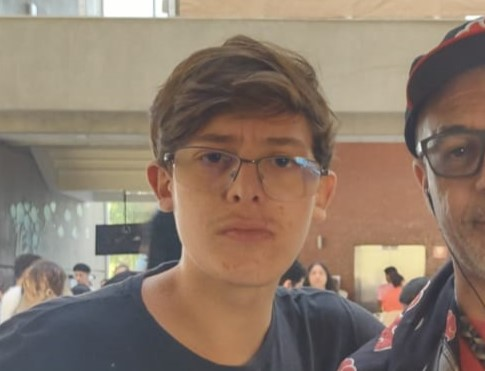

Christian Gogoi | Portifólio
Estudante de desenvolvimento de sistemas
Estudante de desenvolvimento de sistemas

Sou uma pessoa criativa, dedicada e organizada, com facilidade para trabalhar em equipe e aprender rápido. Tenho boa comunicação e gosto de assumir responsabilidades. Como ponto a melhorar, às vezes sou um pouco perfeccionista
Pojeto 1 - Nesse projeto, utilizamos o conhecimento adquirido em aula para montar um projeto livre, utilizando dos links para navegar entre as páginas. No meu caso eu tentei fazer um site de leilão, e ficou com uma qualidade razoável.
Pojeto 2 - Nesse projeto eu fiz com a ajuda do professor, um site que contém uma receita simples de ovo frito, com passo a passo e tudo mais.
e-mail: christian.g.carvalho@aluno.senai.br - ig:chris.carvalho - telefone: 11964844843